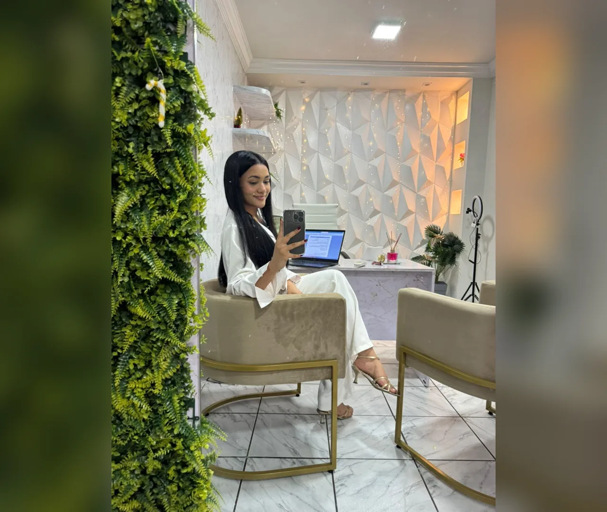
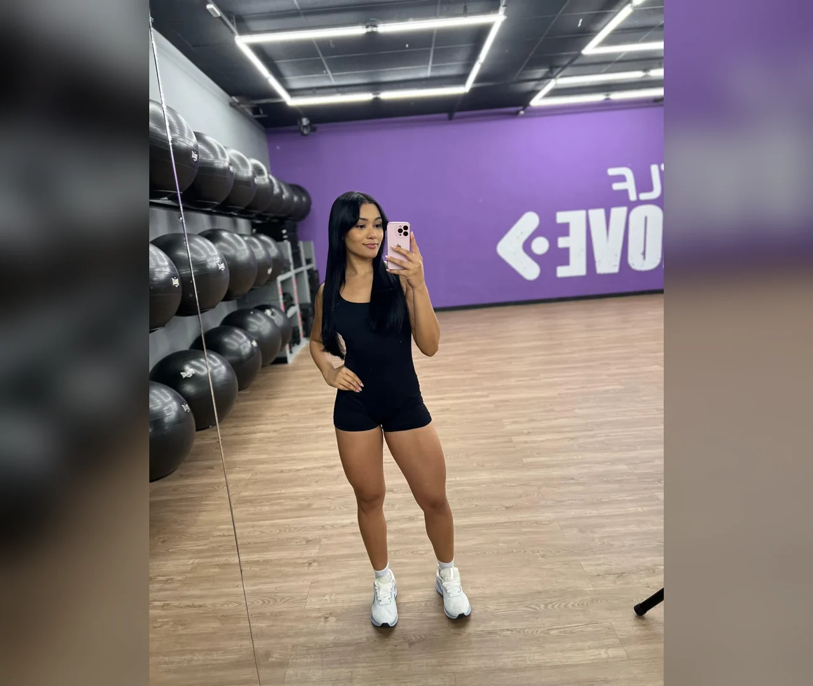

Emagrecer com saúde
Uma estratégia que se encaixa na sua rotina, sem dietas restritivas.
Nutrição clínica e esportiva
Emagreça, ganhe massa muscular ou potencialize sua performance com um plano alimentar feito para a sua realidade.

Sobre mim
Sou nutricionista especialista em emagrecimento, hipertrofia e performance esportiva. Meu objetivo é mostrar que uma alimentação saudável pode ser simples, prática e eficiente.
A melhor dieta é aquela que você consegue seguir. Por isso, eu monto seu plano com alimentos acessíveis que você já conhece e gosta, respeitando seus horários, sua rotina de trabalho, seu orçamento e seus objetivos.
@fabriciamendesnutriPara quem é o acompanhamento
Atendo desde quem está começando a mudar seus hábitos até atletas de diferentes modalidades.
Uma estratégia que se encaixa na sua rotina, sem dietas restritivas.
Um plano de alimentação pensado para o seu treino e seus objetivos de hipertrofia.
Estratégias alimentares adaptadas à sua modalidade, aos treinos e à sua rotina.
Aprenda a se alimentar melhor com escolhas que você consegue manter no dia a dia.
A primeira consulta
A consulta dura em média de 30 a 60 minutos. Nesse tempo, conheço seu contexto, faço a avaliação física e construo seu plano alimentar com você.
Conversamos sobre seu estilo de vida, rotina, horários, hábitos, preferências e objetivos. Também avaliamos seu histórico de saúde, exames, uso de medicamentos, alergias, intolerâncias e outras restrições.
A avaliação inclui peso corporal, bioimpedância, adipometria e medidas de circunferência com fita antropométrica. Usamos esses dados para acompanhar indicadores como percentual de gordura, massa muscular, estado nutricional e evolução corporal.
Montamos a alimentação juntos, durante a consulta, considerando os alimentos que você já gosta, seus horários, sua rotina de trabalho, seu orçamento e seus objetivos.
Para ajudar na precisão da avaliação corporal:
Depois da consulta
Seu plano alimentar tem validade de 60 dias. Nesse período, você pode tirar dúvidas diretamente comigo pelo WhatsApp. Quando necessário, ajusto refeições, alimentos, quantidades ou estratégias conforme sua rotina, sua evolução e os objetivos combinados.

Investimento
Avaliação física, plano alimentar personalizado e suporte pelo WhatsApp por 60 dias.
Se desejar uma nova avaliação após esse período, o valor da consulta permanece o mesmo.
Por consulta
R$ 230,00
Pagamento à vista ou em até 3x no cartão, com possível acréscimo das taxas da operadora.
Agendar pelo WhatsAppPlanos de acompanhamento nutricional
Seu objetivo merece acompanhamento, estratégia e constância! Escolha o plano que melhor se encaixa na sua rotina e vamos construir resultados juntos.
Plano 01
3 consultas ao longo de 6 meses
R$ 660,00
ou 6x de R$ 130,31 na maquininha
Mais completo
Plano 02
6 consultas ao longo de 6 meses
R$ 1.260,00
ou 7x de R$ 218,25 na maquininha
Plano 03
Duas pessoas, dois planejamentos, uma condição especial
R$ 420,00 a dupla
R$ 210,00 por pessoa · ou 4x de R$ 119,45 na maquininha
Avaliações no Google
Nota 5,0 em 34 avaliações no Perfil da Fabrícia no Google. Ver todas as avaliações
★★★★★
“Estou tendo acompanhamento há quase um ano, e os meus resultados são maravilhosos. A cada consulta uma felicidade ao ver que alcancei o objetivo proposto. A Fabricia é uma profissional incrível, que tem somado demais na minha qualidade de vida. Indico o trabalho dela, porque sou prova de que se fizer tudo do jeitinho que ela passa, o resultado vem, e vem rápido!”
★★★★★
“Excelente profissional! Muito atenciosa, explica tudo com calma e monta um plano alimentar personalizado, levando em consideração a realidade e as preferências do paciente. Me senti muito bem acolhida e estou animada para seguir o acompanhamento. Super recomendo!”
★★★★★
“Fabrícia é uma profissional incrível! Ela é super atenciosa, acolhedora e muito competente. Desde o primeiro dia da consulta, eu me senti muito motivada. Estava tendo dificuldade em manter uma alimentação saudável, mas graças a ela, tudo mudou! Já indiquei para todas as minhas amigas!!!”
Perguntas frequentes
O pagamento de R$ 230,00 é feito por consulta e inclui avaliação, plano alimentar personalizado e 60 dias de suporte via WhatsApp.
Após o agendamento, você recebe o endereço e as orientações para o atendimento.
Toque em “Agendar pelo WhatsApp” para falar diretamente comigo e combinar seu atendimento.
Ir para o agendamento